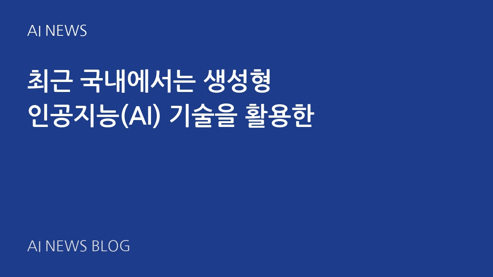
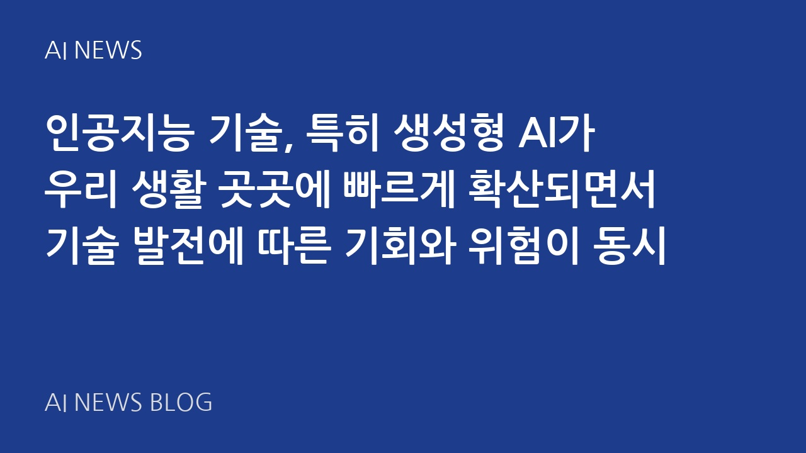

2026-07-14
최근 국내에서는 생성형 인공지능(AI) 기술을 활용한
최근 국내에서는 생성형 인공지능(AI) 기술을 활용한 다양한 시도와 서비스가 급속도로 확산되고 있습니다. 인공지능을 통한 업무 효율화, 고객 서비스 개선, 교육 혁신까지, 각 분야에서 생성형 AI가 중심 기술로 자리 잡고 있어 그 영향력이 점점 커지고 있습니다. 이번 글에서는 주요 AI 뉴스들을 바탕으로 국내 각계에서 진행 중인 생성형 AI 도입 현황과 기대 효과를 살펴보겠습니다.
기사 읽기 →

2026-07-08
최근 생성형 AI가 더욱 빠르게 발전하며 우리 사회 곳
최근 생성형 AI가 더욱 빠르게 발전하며 우리 사회 곳곳에 영향을 미치고 있습니다. 교육 현장에서는 외국인 유학생들을 대상으로 한 AI 특강이 진행되고 있으며, 산업계에서는 ‘생성형 AI 2.0’이라는 신기술이 등장해 기업들을 혁신시키고 있습니다. 의료 분야 역시 멀티 모달 AI 기술로 한 단계 도약 중이고, 보안 분야는 생성형 AI 확산에 대응하는 차세대 솔루션을 내놓고 있습니다. 여기에 티머니와 같은 기업은 AI 기술을 활용해 사회공헌 프로젝트까지 이어가고 있죠. 이번 글에서는 최근 다양한 분야에서 펼쳐지고 있는 생성형 AI 관련 소식을 중심으로, 우리의 미래가 어떻게 변화하고 있는지 살펴보겠습니다.
기사 읽기 →

2026-07-14
최근 생성형 AI(Generative AI)가 공공기관
최근 생성형 AI(Generative AI)가 공공기관부터 민간기업, 지역 사회에 이르기까지 다양한 분야에서 빠르게 도입되고 있습니다. 한국의 여러 지자체와 기업들이 생성형 AI 활용 능력 향상을 위해 교육 프로그램을 제공하고, 투자전략 검증 도구를 출시하는 등 활발한 움직임을 보여주고 있는데요. 이번 글에서는 화성시와 완주군의 AI 행정 교육, 두나무·업비트의 AI 투자 도구, 그리고 대한건축사협회의 AI 역량 성장 촉진 방향을 중심으로 자세히 살펴보겠습니다.
기사 읽기 →

2026-07-08
인공지능 기술, 특히 생성형 AI가 우리 생활 곳곳에 빠르게 확산되면서 기술 발전에 따른 기회와 위험이 동시
인공지능 기술, 특히 생성형 AI가 우리 생활 곳곳에 빠르게 확산되면서 기술 발전에 따른 기회와 위험이 동시에 부각되고 있습니다. 이에 한국에서는 보안 강화부터 인재 양성, 산업 혁신까지 다방면에서 대응이 본격화되고 있는데요. 최신 AI 관련 국내 동향을 살펴보며 앞으로의 방향성을 점검해 보겠습니다.
기사 읽기 →

2026-07-11
최근 인공지능, 그중에서도 생성형 AI 분야가 빠르게
최근 인공지능, 그중에서도 생성형 AI 분야가 빠르게 성장하며 우리 일상과 산업 전반에 혁신을 가져오고 있습니다. 2024년 현재 생성형 AI 로봇 시장은 4조 8,076억 원 규모로 급성장 중이며, 2030년에는 무려 17조 원을 넘을 것이라는 전망이 나오고 있는데요. 이번 글에서는 최신 AI 관련 소식을 바탕으로 생성형 AI의 현황과 교육·투자·산업 전반에서의 영향력을 살펴보겠습니다.
기사 읽기 →

2026-07-08
최근 ‘생성형 AI’라는 단어가 우리 사회 곳곳에서 화제입니다. 단순히 컴퓨터가 무언가를 계산하는 기존 AI
최근 ‘생성형 AI’라는 단어가 우리 사회 곳곳에서 화제입니다. 단순히 컴퓨터가 무언가를 계산하는 기존 AI를 넘어서, AI가 글쓰기, 이미지 생성, 심지어 의료 진단까지 직접 ‘창조’하는 형태로 진화하고 있죠. 오늘은 최신 AI 뉴스들을 통해 생성형 AI가 교육 현장과 의료 산업, 기업 운영, 그리고 사회 공헌 영역에서 어떻게 활용되며 우리 삶을 바꾸고 있는지 살펴보고자 합니다.
기사 읽기 →
2026-07-11
지난 몇 년간 인공지능(AI)은 비약적인 발전을 이루며
지난 몇 년간 인공지능(AI)은 비약적인 발전을 이루며 다양한 산업과 우리 일상에 깊숙이 자리 잡았습니다. 그중에서도 생성형 AI는 텍스트, 이미지, 음성 등 새로운 콘텐츠를 자동으로 만들며 혁신의 중심에 섰죠. 최근 발표된 여러 뉴스를 살펴보면 생성형 AI가 향후 우리 사회와 경제에 얼마나 큰 영향을 미칠지 가늠할 수 있습니다. 이번 글에서는 생성형 AI가 가져올 산업 변화와 교육 현장, 금융 투자, 그리고 스마트 기기 분야까지 폭넓은 영향력을 조망해보겠습니다.
기사 읽기 →

2026-07-08
최근 생성형 AI 관련 소식이 산업과 교육, 사회 전반
최근 생성형 AI 관련 소식이 산업과 교육, 사회 전반에서 뜨겁게 이슈가 되고 있습니다. 단순한 기술 호기심을 넘어 실제 활용과 적용이 본격화하는 모습인데요. 대학에서는 관련 교육과 비교과 프로그램을 확대하며 AI 인재를 양성하는 움직임이 활발하고, 기업들 또한 AI 대응 보안 솔루션과 혁신적 비즈니스 모델을 잇따라 선보이고 있습니다. 더 나아가 사회적 가치 실현을 위한 생성형 AI 기반 프로젝트까지 등장해 AI가 우리 삶 깊숙이 스며들고 있음을 확인할 수 있습니다. 오늘은 최근 5가지 주요 뉴스를 바탕으로 생성형 AI가 어떻게 다양한 분야에서 새로운 패러다임을 만들어가고 있는지 살펴보겠습니다.
기사 읽기 →